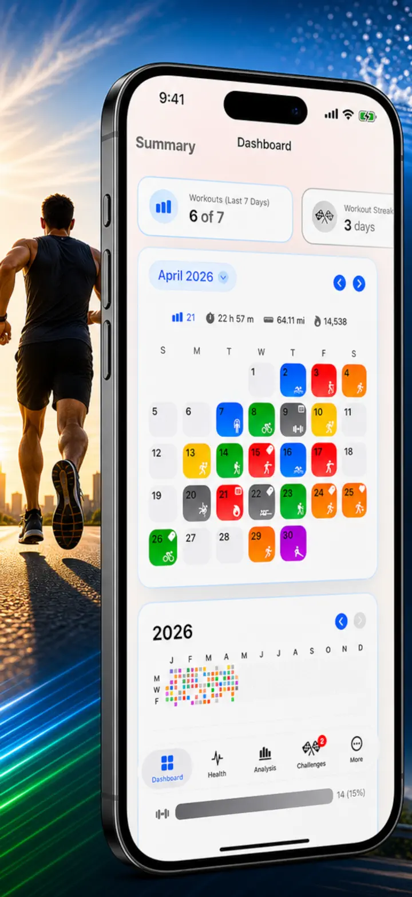
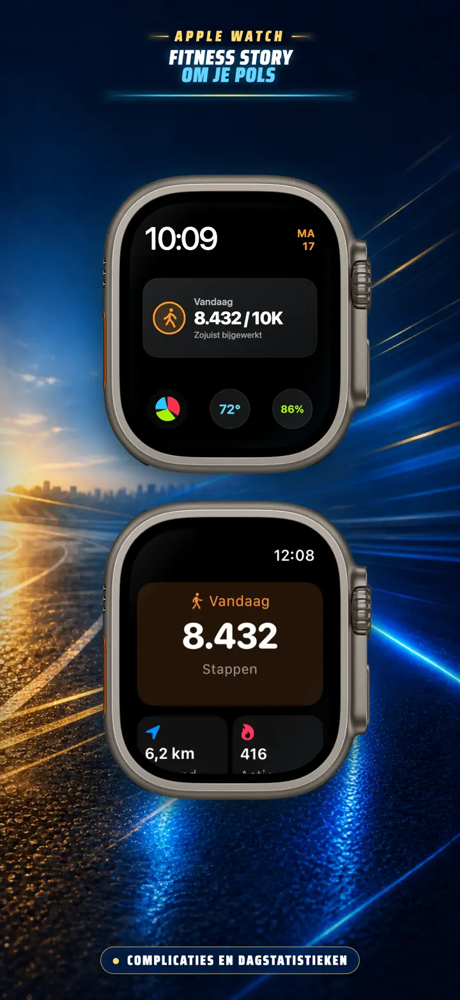
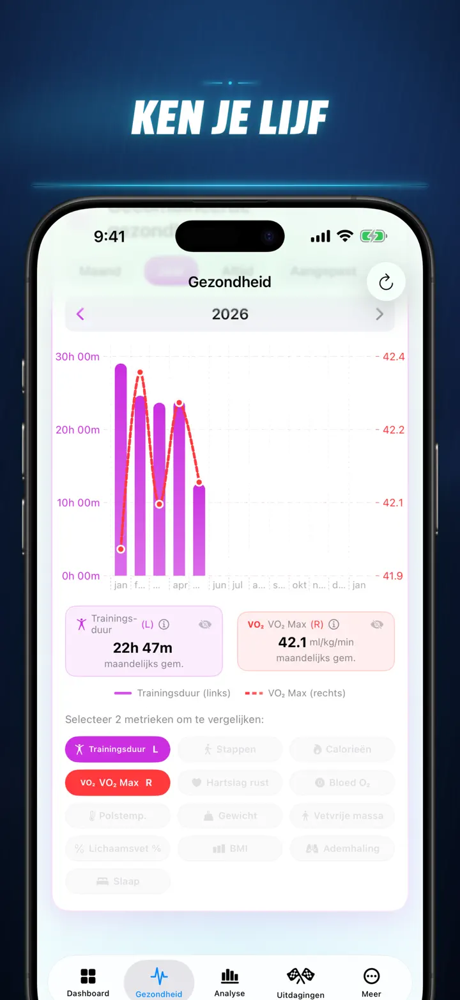
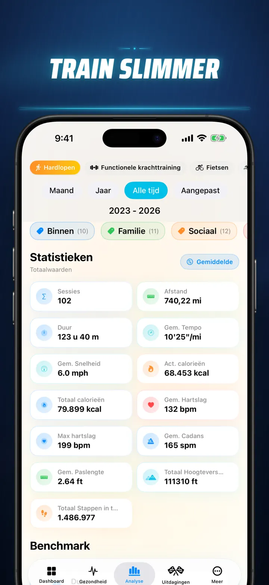
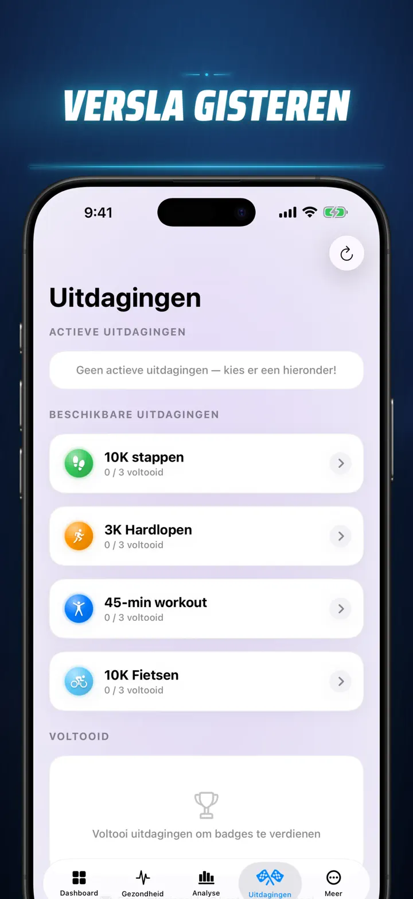
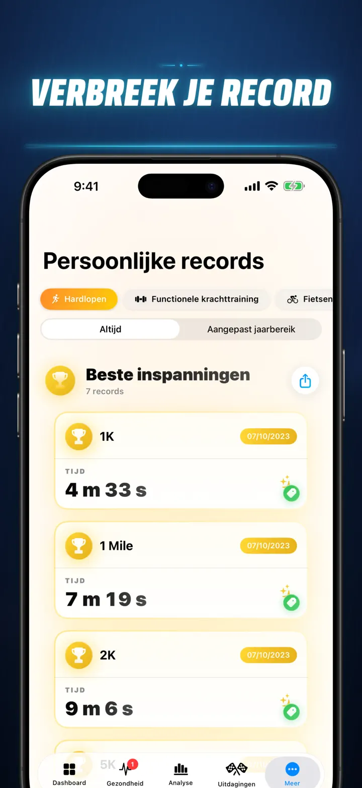
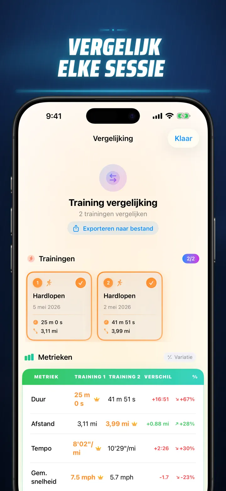
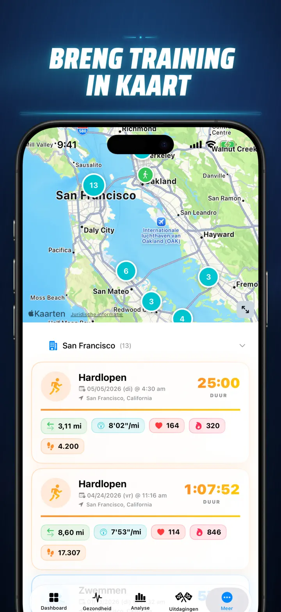
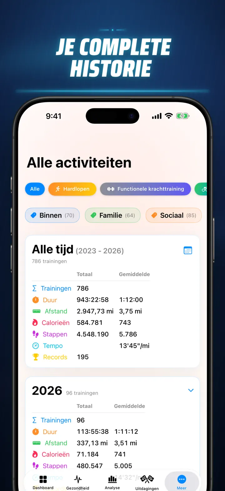

Fitness Story
Ontdek je trainingsresultaten
Nu op Apple Watch: je stappen van vandaag op elke wijzerplaat, plus een Vandaag-scherm met afstand, calorieën en verdiepingen — direct uit Apple Gezondheid.
Download in de App Store
Over de app
Stop met gissen. Begin met weten. Fitness Story zet je Apple Gezondheid-data om in de krachtigste en meest gedetailleerde analyse op iOS. Geen accounts. Geen servers. Gewoon jouw volledige fitnessreis, gevisualiseerd.
Of je nu slaapfasen bijhoudt, loopkadans analyseert of een marathon-PR najaagt – dit is het alles-in-één dashboard dat jouw harde werk verdient.
Werkt met elk apparaat en elke app die met Apple Gezondheid synchroniseert — Apple Watch, Garmin, Polar, Suunto, Zwift en meer.
PROFESSIONELE ANALYSE
- Trend- en benchmarkgrafieken: Gebruik box-and-whiskerplots om mediaan, kwartielen en uitschieters per sporttype te zien.
- Gedetailleerde uitsplitsingen: Filter je geschiedenis op tijdstip, afstandsbereiken, duur, tempo-intervallen, hoogteverschil, kadans en staplengte.
- Alles rangschikken: Met één tik rangschik je de huidige metrics (afstand, tempo, hartslag, enz.) ten opzichte van je volledige geschiedenis. Weet direct of je een 'Top 15%'-prestatie hebt geleverd.
- De bijdragegrafiek: Een GitHub-stijl heatmap van je volledige trainingsgeschiedenis. Keer hem om voor gedetailleerde dagstatistieken.
TRAININGSDETAILS OPNIEUW BEKEKEN
- Slimme kaarten: Kleurcode je buitenroutes op snelheid, hoogte of hartslagzones. (Inclusief China-kaartcorrectie).
- Diepgaande splitanalyse: Bekijk km- of mijlsplits met tempo, hoogte, hartslag en kadans voor elke afzonderlijke ronde.
- Hartslagzones: Visualiseer tijd in aangepaste zones 1–5 op basis van je leeftijd en rusthartslag.
- Rijke context: Voeg foto's, opgemaakte notities, inspanningsbeoordelingen (1–10) en aangepaste tags toe aan elke training.
COMPLEET GEZONDHEIDSCOMMANDOCENTRUM
- Alles wat je Apple Watch meet, gevisualiseerd op één plek met dagelijkse, wekelijkse en jaarlijkse trends:
- Hartgezondheid: Rusthartslag, VO2 Max (leeftijdsgecorrigeerd), bloedzuurstof en ademhalingsfrequentie.
- Lichaamssamenstelling: Gewicht, lichaamsvetpercentage, vetvrije massa en BMI met trendindicatoren.
- Activiteit en herstel: Stappen (met uurlijkse uitsplitsing), actieve vs. basale calorieën en polstemperatuurafwijkingen.
- Geavanceerde slaaptracking: Diepe, kern-, REM- en wakkere fases nacht voor nacht gevisualiseerd.
- Correlatieoverzichten: Overlay meerdere gezondheidsmetrics om te zien hoe slaap je hartslag beïnvloedt of hoe gewicht je VO2 Max verandert.
VERGELIJK EN COMPETEER
- Trainingsvergelijking: Selecteer tot 10 trainingen voor zij-aan-zij vergelijking. Zie variantiepercentages (bijv. '+1,5% Sneller') per metric, per split!
- Vergelijkingsexport: Wil je analyseren met andere tools? Exporteer je trainingsvergelijking!
- Persoonlijke records: Automatische tracking voor 1K, 5K, 10K, halve marathon, marathon en aangepaste afstanden. Verdien gouden, zilveren en bronzen trofeeën.
- Story-tijdlijn: Een chronologische stroom van elke mijlpaal, record en training die je ooit hebt voltooid.
JOUW DATA, OVERAL
- Wereldkaart: Zie elke plek waar je ooit hebt gesport op een interactieve wereldkaart met clustering.
- Krachtige export: Exporteer je volledige geschiedenis (of aangepaste periodes) naar CSV of JSON. Inclusief volledige splitdata, lichaamsmetrics en metadata.
- iCloud-synchronisatie: Je favorieten, tags, notities en beoordelingen synchroniseren direct op al je apparaten.
- Privacy voorop: Geen verborgen servers. Je data staat op je apparaat en in je privé iCloud.
- Jouw zweet vertelt een verhaal. Het is tijd om het te lezen. Download Fitness Story vandaag nog.
Download Fitness Story en ontgrendel je inzichten!
Privacy Policy: https://masawata.net/privacy-policy.html Terms Of Service: https://www.apple.com/legal/internet-services/itunes/dev/stdeula/
Schermafbeeldingen








Fitness Story
Nu op Apple Watch: je stappen van vandaag op elke wijzerplaat, plus een Vandaag-scherm met afstand, calorieën en verdiepingen — direct uit Apple Gezondheid.
Download in de App Store